|
|
【耶穌，沙崙玫瑰】 |
|
1 Jesus, Rose of Sharon, bloom within my heart; Refrain: 2 Jesus, Rose of Sharon, sweeter far to me 3 Jesus, Rose of Sharon, balm for ev’ry ill, 4 Jesus, Rose of Sharon, bloom forevermore; |
耶穌，沙崙玫瑰，在我心開放， |
|
http://www.sooopu.com/html/181/181953.html 耶穌，沙崙玫瑰
Jesus, Rose of Sharon
|
|
|
|
|


【耶穌，沙崙玫瑰】 詩集：美樂頌，207 - 耶穌,沙崙玫瑰(JESUS, ROSE OF SHARON) 傳統詩歌國語字幕演唱
https://www.youtube.com/watch?v=MSZxtvUnjVk - Jesus, Rose of Sharon - A Cappella Hymn
https://www.youtube.com/watch?v=jItQXC3D3ys -
Jesus, Rose of Sharon · Altar of Praise Chorale
https://youtu.be/Ndq7H6jpNFk https://youtu.be/nR8KOnuD_88
| Text: | Jesus, Rose of Sharon |
| Author: | Ida A. Guirey |
| Tune: | ROSE OF SHARON |
| Composer: | Charles H. Gabriel, 1856-1932 |
| Short Name: | Ida A. Guirey |
| Full Name: | Guirey, Ida A. |
Early 20th Century
Tune Information
| Title: | [Jesus, Rose of Sharon, bloom within my heart] |
| Composer: | Charles Hutchinson Gabriel |
| Incipit: | 32123 56512 32123 |
| Key: | E Major |
| Copyright: | © 1950 Rodeheaver Co. |
| Short Name: | Chas. H. Gabriel |
| Full Name: | Gabriel, Chas. H. (Charles Hutchinson), 1856-1932 |
| Birth Year: | 1856 |
| Death Year: | 1932 |
Pseudonyms: C. D. Emerson, Charlotte G. Homer, S. B. Jackson, A. W. Lawrence, Jennie Ree

=============
For the first seventeen years of his life Charles Hutchinson Gabriel (b.
Wilton, IA, 1856; d. Los Angeles, CA, 1932) lived on an Iowa farm, where
friends and neighbors often gathered to sing. Gabriel accompanied them on
the family reed organ he had taught himself to play. At the age of sixteen
he began teaching singing in schools (following in his father's footsteps)
and soon was acclaimed as a fine teacher and composer. He moved to
California in 1887 and served as Sunday school music director at the Grace
Methodist Church in San Francisco. After moving to Chicago in 1892, Gabriel
edited numerous collections of anthems, cantatas, and a large number of
songbooks for the Homer Rodeheaver, Hope, and E. O. Excell publishing
companies. He composed hundreds of tunes and texts, at times using
pseudonyms such as Charlotte G. Homer. The total number of his compositions
is estimated at about seven thousand. Gabriel's gospel songs became widely
circulated through the Billy Sunday-Homer Rodeheaver urban crusades.
Bert Polman
“JESUS, ROSE OF SHARON” hymnstudiesblog
“That Christ may dwell in your hearts by faith…being rooted and grounded in love…” (Eph. 3:17)
INTRO.:
A song which describes the love with which Christ dwells in our hearts is “Jesus, Rose Of Sharon” (#445 in Hymns for Worship Revised, #131 in Sacred Selections for the Church). The text is attributed to Ira A. Guirey, the identify of whom is unknown. No information is available about this author, other than that she was active in the early part of the twentieth century. There is the possibility that the name is a pseudonym for another gospel hymn writer. However, there was an Ida Augusta Guirey who was born in 1874 to George Guirey and Sarah Francis Higgins Guirey. According to 1880 United States Census records, this birth took place in San Francisco, CA. She passed away in 1957. There is no way of knowing for sure if this person is the author of the song. Cyberhymnal.org says that Ida A. Guirey (Early 20th Century) also wrote a hymn entitled “Under the Blood” in 1920 with music by C. S. Brown, beginning “My sins, which were many, are all washed away, And now I am happy and free; I sing of God’s mercy by night and by day, His wonderful mercy to me.”
Hymntime.com lists Guirey as the author of five other hymns, “God Has Given Each a Field,” “It Was Heaven in My Heart when Jesus found me,” “More and More My Heart,” “O to Be Like Jesus and to walk,” and “There Is Joy, Wonderful Joy.” Hymnary.org gives one more title, “Do you need a friend to help you?” Researchers have suggested that she must have appreciated nature, including beautiful and fragrant flowers, like roses; that her age probably was that of at least a young woman, if not older; and that she most likely wrote as she looked at one of the more obscure books of the Bible since only Song of Solomon 2:1-2 uses the phrase which she borrowed for her song’s title and oft-repeated description. The tune (Sharon) was composed by Charles Hutchinson Gabriel (1856-1932). Gabriel, who lived for a time in San Francisco, often himself used the alias “Charlotte G. Homer” for the author’s name when he provided both words and music for a hymn; other well known songs by Gabriel include “Come to the Feast,” “God Is Calling the Prodigal,” “I Will Not Forget Thee,” “O That Will Be Glory for Me,” “Only a Step,” “Send the Light,” “I Stand Amazed,” “He Lifted Me,” and “Where the Gates Swing Outward Never.” The song “Jesus, Rose of Sharon” was produced, probably in 1921, and was first published in Rodeheaver’s Gospel Songs, compiled at Chicago, IL, in 1922 by Gabriel and Homer Alvin Rodeheaver (1880-1955).
Born at Union Furnace, OH, Rodeheaver was a well-known gospel musician, hymn writer, and religious music publisher of the early twentieth century. Rodeheaver’s work greatly influenced the popularization of the gospel song in the first half of the twentieth century. In 1908 he became songleader for the crusades of evangelist Billy Sunday, and in 1910 founded The Rodeheaver Publishing Company in Chicago. Gabriel became associated with this firm in 1912. In 1920 Rodeheaver established Rainbow Records, one of the earliest labels devoted solely to gospel music. In 1936 The Rodeheaver Company merged with the Hall-Mack Publishing Company of Philadelphia, PA, and in 1941 was moved to Winona Lake, IN. Rodeheaver composed only a little but edited some eighty hymn collections, perhaps the most-used of which was his 1948 Christian Service Hymns. One of his tunes that appears in some of our books was composed for “Good Night and Good Morning” copyrighted in 1922 with words by Lizzie DeArmond. “Jesus, Rose of Sharon” had originally been copyrighted by Rodeheaver, and the copyright was renewed in 1950 by The Rodeheaver Company, which is now a division of Word, Inc.
Among hymnbooks published by members of the Lord’s church for use among churches of Christ, “Yield Not To Temptation” has appeared in the 1937 Great Songs of the Church No. 2 edited by E. L. Jorgenson; the 1965 Great Christian Hymnal No. 2 edited by Tillit S. Teddlie; the 1966 Christian Hymns No. 3 edited by L. O. Sanderson; the 1971 Songs of the Church, the 1990 Songs of the Church 21st C. Ed., and the 1994 Songs of Faith and Praise, all edited by Alton H. Howard; the 1978/1983 Church Gospel Songs and Hymns edited by V. E. Howard; the 1986 Great Songs Revised edited by Forrest M. McCann; the 1992 Praise for the Lord edited by John P. Wiegand; the 2007 Sacred Songs of the Church edited by William D. Jeffcoat; the 2009 Favorite Songs of the Church and the 2010 Songs for Worship and Praise both edited by Robert J. Taylor Jr.; in addition to Hymns for Worship and Sacred Selections.
The song figuratively pictures Jesus as the rose of Sharon whom we cherish and adore
I. Stanza 1 says that Jesus is like a flower that fills our lives with a beautiful fragrance
Jesus, Rose of Sharon, bloom within my heart;
Beauties of Thy truth and holiness impart,
That where’er I go my life may shed abroad
Fragrance of the knowledge of the love of God.
- As a flower imparts a sweet smell, so Jesus imparts His truth that we might be holy: 1 Pet. 1:15-16
- We then shed abroad this fragrance by the example of our lives: Matt. 5:16
- In this way, others can receive a knowledge of the love of God: Eph. 5:1-2
II. Stanza 2 says that Jesus is like a flower which is sweeter and fairer than any on earth
Jesus, Rose of Sharon, sweeter far to see
Than the fairest flowers of earth could ever be,
Fill my life completely, adding more each day
Of Thy grace divine and purity, I pray.
- The reason that Jesus is the sweetest and fairest is that He brings us salvation by the grace of God: Tit. 2:11-14
- Thus, we should want him to fill our lives completely: Col. 1:9-11
- When we are so filled, He will add more each day of His purity: 1 Tim. 4:12
III. Stanza 3 (not in HFWR) says that Jesus is like a flower whose balm can heal us
Jesus, Rose of Sharon, balm for every ill,
May Thy tender mercy’s healing power distill
For afflicted souls of weary burdened men,
Giving needy mortals health and hope again.
- In Jesus Christ, sinful mankind can find that “balm of Gilead” which God prescribes for our souls: Jer. 8:22
- We need this balm because our souls are afflicted or burdened and need rest: Matt. 11:28-30
- Only Christ can give us health and hope by providing for our spiritual healing: Mal. 4:1-2
IV. Stanza 4 says that Jesus is like a flower that will bloom forevermore
Jesus, Rose of Sharon, bloom forevermore;
Be Thy glory seen on earth from shore to shore,
Till the nations own Thy sovereignty complete,
Lay their honors down and worship at Thy feet.
- It is the desire of God for the beauty of Christ to spread from shore to shore as He is preached to all nations: Lk. 24:46-47
- The goal of this preaching is that the nations will own His sovereignty: Phil. 2:9-11
- And the ultimate hope is to lay our honors down and worship at His feet before His throne: Rev. 22:1-5
CONCL.:
The chorus expresses the desire that this flower would bloom within us
Jesus (Blessed Jesus),
Rose of Sharon,
Bloom in radiance
And in love within my heart.
CONCL.:
I have heard people question whether it is scriptural to use this song because the term “rose of Sharon” is used only once in the entire Bible, and in that instance it does not refer to Jesus. Kyle Butt of Apologetics Press made the following comments:
In fact, although no one can say for certain which flower is the actual “rose of Sharon,” many scholars think the best guess is the cistus or rock-rose. The cistus blooms in various parts of Palestine, and is well known for its soothing aroma and pain-relieving qualities.
When and why the title “Rose of Sharon” was given to Jesus is rather vague. But at least two reasons as to why it might have been assigned to our Lord seem fairly clear. First, Jesus Christ is the pinnacle of beauty and splendor. Of course, His earthly body could not boast of such attributes (Isaiah 53:2), but His spiritual beauty and majesty remain unsurpassed by any created being in Heaven or on Earth (2 Peter 1:16). Second, Christ’s healing powers and pain-relieving actions find a definite point of comparison with those of the rock-rose. Is it any wonder that the “Great Physician,” Who came to heal those who were physically ill as well as those who were spiritually sick, should be given the name of a flower known for its sweet aroma and soothing medicinal qualities?
Although the Holy Spirit never chose to inspire the Bible writers to refer to Jesus as the “Rose of Sharon,” it nevertheless is a name we can employ to speak of the majesty, beauty, and healing power of our Lord. (end of quote)
Of all the lovely flowers on earth, none could be more precious than “Jesus, Rose of Sharon.”
https://hymnstudiesblog.wordpress.com/2016/06/20/782667/
為什麼聖經中把主耶穌比作沙倫的玖瑰花
當女子適度地將自己比擬成普通的野花時,快速的交替接續著。傳統的譯法沙崙的玫瑰回花(和合本答小字、思高、NEB“水仙花”)事實上難以令人滿意。古代的譯本也沒有多大的幫助,它們大多數都只是使用較廣泛的總稱詞語。
在舊約聖經時代,巴勒斯坦可能生長一些種類的野玫瑰,但在此這麼譯的這個字是衍生自一個希伯來文動詞,“形成球莖”。玫瑰樹叢當然長出球莖狀的果實——玫瑰的結實,但一般都同意:這裡所描寫的是球莖類之一,番紅花(呂譯)、水仙花、鳶尾花、喇叭水仙是常被列入的選擇。
不是把耶穌比作沙倫的玫瑰花,是雅歌中的女主人公因為自卑才將自版己比作沙倫的玫瑰權花和谷中的百合花,因為她見所羅門王的妃嬪都如此尊貴華麗,自己卻只是為父家牧羊的。而恰恰是被比喻的花在聖經中耶穌談到所羅門的國時卻說:“它所穿戴的還不如這話一朵呢”
3匿名使用者
這取決於以色列當地的地理情況,就像耶穌撒種的比喻一樣,是符合當時當地的風土人情的。而在以色列地中,有沙漠,有平原,有高山,在這樣的地理條件下出產的鳳仙花、百合花、玫瑰都是美麗的花朵,且十分珍貴,藉此意指耶穌。
4斷ED天使
雅1:14 我以我的良人為一棵鳳仙花,在
隱基底葡萄園中。
隱基底蟄伏在死海西岸崎嶇的石灰崖下,是個生機盎然的綠洲。那裡長滿果實累累的棕樹,又盛產香氣四溢的香樹脂。隱基底四周則一片荒蕪、天氣燥熱,屬沙漠性氣候,是巴勒斯坦一帶最荒涼和貧瘠的地方。
因此,每當鳳仙花盛開的時候,特別顯得鮮豔出眾,與四周死寂荒蕪的環境形成強烈對比。
雅2:1 我是沙崙的玫瑰花(注:或作“水仙花”),是谷中的百合花。
2:2 我的佳偶在女子中,好像百合花在荊棘內。
沙崙的玫瑰和谷中的百合花都是以色列常見的花草。那個女子這樣自稱,可能表示:“我並沒有什麼特別之處,只不過是一朵平凡的小花兒罷了。
”但是所羅門卻迴應說:“噢,不是的,你一點也不平凡,是百合花在荊棘內,是與眾不同的。”這是所羅門的情話。
經常向情人表示鼓勵和欣賞,比什麼都重要。
寓意解釋:主要認為雅歌的男女主角分別象徵神和人。猶太拉比把他們當做耶和華和他的子民以色列民。後來基督教則把他們看成基督和教會的關係。
https://www.cherryknow.com/health/985894.html
沙侖的玫瑰 聖經中的花
- 分類：聖經中的花
- 發佈：2014-09-14, 週日 14:35
- 點擊數：5388
‘我是沙崙的玫瑰, 谷中的百合花.”
------------歌:2:1.
‘曠野和乾旱之地必然歡喜；沙漠也必快樂；又像玫瑰開花，’
------------賽35:1.
以上兩處聖經所稱呼的”玫瑰”, 原文是用同一個字. 是指何種花, 有很多不同看法, 但肯定不是現在大家所認知的玫瑰.
因為在聖經時代, 迦南地還沒有引進下圖所見的各種屬於薔薇屬(Rosaceae), 薔薇科(Genus Rosa) 的玫瑰品種.
| (Data source: webtaj.com) | (Data source:content.time.com) |
英文聖經首次翻譯雅歌書2:1的花為玫瑰是在1611年的King James版, 而最近的新標準版new revised standard
version翻譯委員會則認為原希伯來文應更靠近番紅花.
沙崙平原是以色列三個沿地中海海岸平原之一. 南起雅法
(Jaffa,Joppa), 北至迦密山脈(Carmel mountain). 土壤肥沃, 植物生長茂盛.
(Data source: holylandphotos.org)
沙崙的希伯來文原意, 為平原或平坦地方的意思. 沙崙的玫瑰可能是泛指沙崙平原地區的一種花.
雅歌書中的女主角稱自已為”谷中的百谷, 沙崙的玫瑰” , 也可能是自謙自己不過是山中或平原上的一朵野花, 並非特指某種花, 甚或特指沙崙平原上的花.
本文嘗試收集各種對’沙崙玫瑰’ 認定的不同看法,作為大家參考:
1. Pancratium maritimum(海百合).
由於Pancratium maritimum的希伯來文חבצלת החוף (khavatselet ha-Khof),
和沙崙玫瑰的希伯來文חבצלת השרון (khavatselet ha-Sharon ) 十分相似, 因此許多猶太人認為沙崙的玫瑰是Pancratium
maritimum.
|
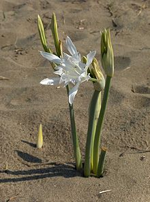 |
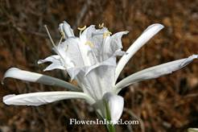 |
| (Data source: en.wikipedia.org) | (Data source: flowersinisrael.com) |
1.1 名稱 Pancratium maritimum(海百合).
通稱Sea daffodil,Sea pancratium lily.
拉丁文maritimum為’海的’(of the sea) 的意思.
1.2 類別
Family科: Amaryllidaceae石蒜科
Genus屬: Pancratium全能花屬
Species種:P.maritimum海百合.
1.3 原生地:
地中海地區, 西南歐. 尤其是海岸沙地, 沙丘.
植株性喜充分的陽光以及排水良好的沙質土壤.
(Data
source: commons.wikimedia.org)
1.4 特徵:
多年生草本. 鱗莖植物(bulbus plant).
(Data
source: flowersinisrael.com)
長頸, 植株可高達40公分. 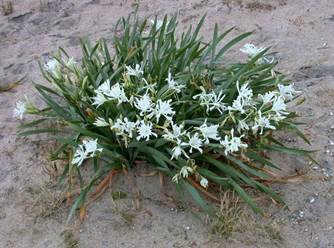 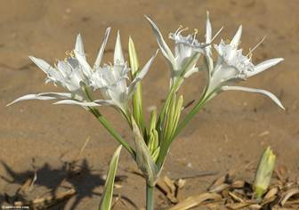
葉窄長線型, 全緣.
(Data
source: linneenne-bordeaux.pagesperso-orange.fr)
花白色, 傘狀花序,3-15朵. 花期8-10月.有怡人的百合清香, 味道清淡，在無風狀態, 較能聞得出.
海百合有一特性, 其雌蕊拒收自花的花粉,只有在異花授粉之下才能完成繁衍程序.
(Data
source: weat-crete.com)
1.5 質疑:
雅歌書的季節背景按二章11-12節中所描述的情景似乎是在三,四月春暖花開之時;
‘因為冬天已往，雨水止住過去了.’
‘地上百花開放，百鳥鳴叫的時候（或譯：修理葡萄樹的時候）已經來到；斑鳩的聲音在我們境內也聽見’
-----------歌2:11-12.
Pancratium maritimum(海百合)花期是在8-10月, 因此有些人認為海百合並非沙崙玫瑰最佳選擇.
2. Tulipa agenensis
Tulipa agenensis(阿爾泰郁金香)生長在敘利亞到以色列的海岸地區, 包括Sharon.花期為2-4月, 滿能符合雅歌書描述的時空背景.
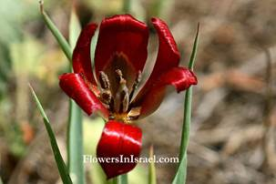
(Data source: flowersinisrael.com)
2.1 名稱:
Tulipa agenensis (通稱Sharon tulip, Sun’ s-eye
tulip)
2.2 類別:
Family科: Liliaceae百合科
Genus屬: Tulipa郁金香屬
Species種: T. agenensis阿爾泰郁金香
有兩種亞種:
T. agenensis subsp. agenensis
T. agenensis subsp. sharonensis
2.3 原生地:
地中海東岸由敘利亞到以色列,以及塞浦路斯島的沿海平原.
(Data
source: en.wikipedia.org)
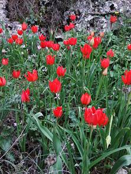
(Data
source: en.wikipedia.org)
2.4 特徵: 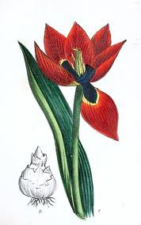 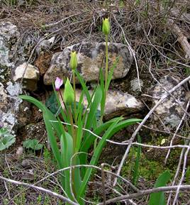
多年生草本, 鱗莖植物（bulbus plant）.
植株高40公分, 亞種subsp.sharonensis較矮, 約20-25公分..
(Data
source: vi.sualize.us)
葉茅尖至茅尖線型. 長25公分, 寬2.5-4公分.
亞種subsp.sharonensis葉較小, 寬約1-2公分.
Copyright:
Umar Ulyn
(Data
source: treknature.com)
單花, 花期2月-4月. 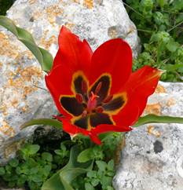
花瓣茅尖型, 以紅色為主色. 內側底部有一塊鑲黃邊的黑斑, 面積約佔花瓣的1/3-1/2. 花瓣外側底部有小塊黃色.這是此種花的最大特徵.
花分內, 外花瓣, 各三片.
外花瓣較大, 約4-9公分長,2-3公分寬.
內花瓣較小, 約3-7公分長,1-2公分寬.
亞種subsp. sharonensis的花較小.
(Data
source: commons.wikimedia.org)
(Data
source: panoramio.com)
(Data
source: tiuli.com)
T. agenensis subsp. agenensis生長局限於石灰巖及白雲巖上的紅石灰土壤.(Terra Rossa on hard limestone
and dolomite.)
T. agenensis subsp. sharonensis僅生長於沙質土壤, 或石灰質砂巖.
T.
agenensis subsp. agenensis
Copyright:
Ori Fragman Sapirfragman
(Data
source: treknature.com)
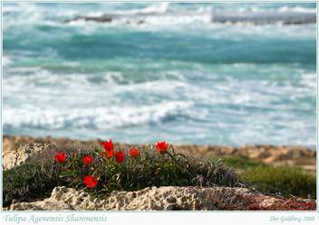
T.
agenensis subsp. sharonensis
Copyright:
Shir Goldberg
(Data
source: treknature.com)
3. Narcissus tazetta
有部分人認為沙崙的玫瑰指的是水仙花, 因此中文聖經雅歌書中沙崙的玫瑰. 玫瑰旁有小字加註: 或譯水仙.
(Data source: flowersinisrael.com)
3.1 名稱
Narcissus tazetta,
通稱Bunchflower daffodil, Polyanthus narcissus.
3.2 類別
Family科: Amaryllidaceae石蒜科
Genus屬: Narcissus水仙屬
Species種:N. tazetta水仙.
3.3 原生地:
不能確定, 可能是南歐. 早在古埃及古希臘就已有人工種植, 為製作精油材料. 現今生長已遍佈全球, 尤其是亞洲及北非.
3.4 特徵:
多年生草本, 鱗莖植物(bulbus plant).
通常叢生, 球根連結成大塊. 每顆球根發2-5片葉子, 一支花莖. 植株高約30-45公分.
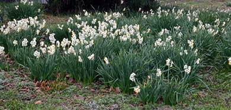
(Data source: botanyboy.org)
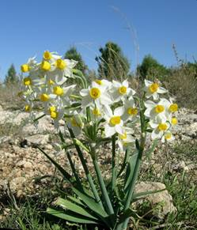 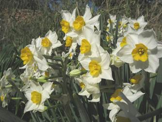
(Data source: panoramio.com)
鱗莖及根
(Data source: botanyboy.org)
葉生長呈蓮座叢, 細長線形, 全緣.
(Data source: bulbsonline.org)
傘狀花序,3-15朵簇生. 花芳香.
每朵花有六片外花瓣(花被), 白色, 橢圓形, 微向後傾.
杯狀內花瓣(花冠) 位於六片外花瓣中央, 橘黃色, 寬度為高度的兩倍.
花期是晚秋及冬天, 十月至來年二月.
(Data source: botanic.tau.ac.il)
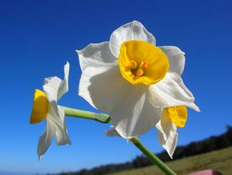
(Data source: commons.wikimedia.org)
3.5 Narcissus tazetta的變種Narcissus tazetta var. chinensis中國水仙早已在中國的沿海地區廣泛種植,
據稱已有1300-1400年歷史. 水仙花是中國農曆年重要的應景花之一. 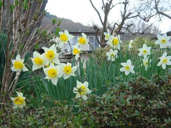
(Data source: jardinsecret.pixnet.net)
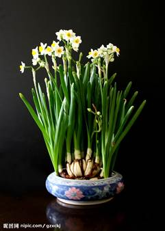
(Data source: nipic.com)
4. Crocus 番紅花屬中的一種.
新標準版new revised standard version翻譯委員會認為Rose of Sharon的希伯來文應更靠近番紅花.
番紅花在以色列約有八種品種, 其中以Crocus hyemalis最為普遍. 詳細介紹, 請參考” 番紅花” 篇. 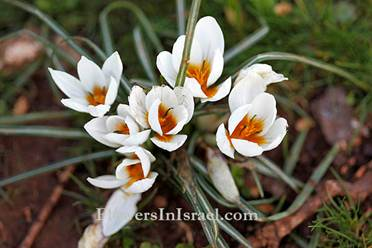
Crocus hyemalis
(Data source: flowersinisrael.com)
參考資料:
1. 和合本聖經.
2. 啟導本聖經.
3. Pancratium maritimum
----------flowersinisrael.com.
4. What is the Rose of Sharon
-----------gotquestions.org.
5. Rose of Sharon
-----------en.wikipedia.org.
6. Tulipa agenensis
-----------species.wikimedia.org.
7. Narcissus tazetta
------------botanyboy.org.
8. The History of the Rose of Sharon Bush
------------gardenguides.com.
http://www.5plus2edu.org.tw/joomla/index.php/menu-flowersinthebible/menu-rose
49 Bible Verses about Thee Rose Of Sharon
https://www.openbible.info/topics/the_rose_of_sharon
Rose of Sharon Wikipedia
Rose of Sharon is a name that has been applied to several different species of flowering plants that are valued in different parts of the world. It is also a biblical expression, though the identity of the plant referred to is unclear and is disputed among biblical scholars. In neither case does it refer to actual roses, although one of the species it refers to in modern usage is a member of Rosaceae. The deciduous flowering shrub known as the rose of Sharon is a member of the mallow family which is distinct from the family Rosaceae. The name's colloquial application has been used as an example of the lack of precision of common names, which can potentially cause confusion.[1] "Rose of Sharon" has become a frequently used catch phrase in poetry and lyrics.[citation needed]
Biblical origins[edit]
The name "Rose of Sharon" first appears in Hebrew in the Tanakh. In the Shir Hashirim ('Song of Songs' or 'Song of Solomon') 2:1, the speaker (the beloved) says "I am the rose of Sharon, a rose of the valley". The Hebrew phrase חבצלת השרון (ḥăḇatzeleṯ hasharon) was translated by the editors of the King James version of the Bible as "rose of Sharon"; however, previous translations had rendered it simply as "the flower of the field" (Septuagint "ἐγὼ ἄνθος τοῦ πεδίου",[2] Vulgate "ego flos campi",[3]Wiclif "a flower of the field"[4]). Contrariwise, the Hebrew word ḥăḇatzeleṯ occurs two times in the scriptures: in the Song, and in Isaiah 35:1, which reads, "the desert shall bloom like the rose." The word is translated "rose" in the King James version, but is rendered variously as "lily" (Septuagint "κρίνον",[5] Vulgate "lilium",[6] Wiclif "lily"[7]), "jonquil" (Jerusalem Bible) and "crocus" (RSV).
Varying scholars have suggested that the biblical "rose of Sharon" may be one of the following plants:
- A crocus: "a kind of crocus growing as a lily among the brambles" ("Sharon", Harper's Bible Dictionary) or a crocus that grows in the coastal plain of Sharon (New Oxford Annotated Bible);
- A tulip: "a bright red
tulip-like flower ... today prolific in the hills of Sharon" ("rose", Harper's
Bible Dictionary);
- Tulipa agenensis, the Sharon tulip, a species of tulip suggested by a few botanists or
- Tulipa montana[8]
- A lily: Lilium candidum, more commonly known as the Madonna lily, a species of lily suggested by some botanists, though likely in reference to the lilies of the valley mentioned in the second part of Song of Solomon 2:1.[citation needed]
- Narcissus ("rose", Cyclopaedia of Biblical, Theological and Ecclesiastical Literature)[9]
According to an annotation of Song of Solomon 2:1 by the translation committee of the New Revised Standard Version, "rose of Sharon" is a mistranslation of a more general Hebrew word for crocus.[citation needed]
Etymologists have tentatively linked the biblical חבצלת to the words בצל beṣel, meaning 'bulb', and חמץ ḥāmaṣ, which is understood as meaning either 'pungent' or 'splendid' (The Analytical Hebrew and Chaldee Lexicon).
A possible interpretation for the biblical reference is Pancratium maritimum, which blooms in the late summer just above the high-tide mark. The Modern Hebrew name for this flower is חבצלת or חבצלת החוף (ḥăḇaṣṣeleṯ, or habasselet ha-khof, coastal lily). Some identify the beach lily with the "rose of Sharon" mentioned in the Song of Songs, but not all scholars accept this.[10]
Recently, some scholars have translated ḥăḇaṣṣeleṯ as "a budding bulb" in consideration of the genealogical research of multilingual versions and lexicons.[11]
Modern usage[edit]

{kind=link}
{kind=link}
{kind=link}
{kind=link}
The name "rose of Sharon" is also commonly applied to several plants,[12] all originating outside the Levant and not likely to have been the plant from the Bible:
- Hypericum calycinum (also called Aaron's beard due to its net-veined underside and numerous yellow stamens), an evergreen flowering shrub native to southeast Europe and southwest Asia
- Hibiscus syriacus, a deciduous flowering shrub native to east Asia, and the national flower of South Korea (also known as "Mugunghwa")[13]
- Hibiscus rosa-sinensis (var. 'Vulcan'), the national flower of Malaysia
The term is also applied to varieties of iris, Malus domestica and Paeonia lactiflora.[citation needed]
References[edit]
- ^ Botanic Gardens Trust, Sydney, Australia: Why use a scientific name? Archived 2015-09-05 at the Wayback Machine
- ^ Song 2:1, Septuagint
- ^ Song 2:1 Archived 2020-07-12 at the Wayback Machine, Vulgate
- ^ Song 2:1, Wiclif
- ^ Is 35:1, Septuagint
- ^ Is 35:1 Archived 2020-07-12 at the Wayback Machine, Vulgate
- ^ Is 35:1, Wiclif
- ^ "Rose of Sharon". www.flowersinisrael.com. Retrieved 16 April 2020.
- ^ McClintock, John; Strong, James (1889). "Rose". Cyclopaedia of Biblical, Theological, and Ecclesiastical Literature, Vol. IX RH-ST. New York: Harper & Brothers. p. 128. Retrieved 8 October 2014.
- ^ Coastal Lily at wildflowers.co.il (in Hebrew)
- ^ Satoshi Mizota. Origin of 'Rose of Sharon' : An Analysis of Various Translations Having a Bearing on The Authorized Version Text. Dissertation for MA: Aich University, 2008."Archived copy" (PDF). Archived from the original (PDF) on 2014-02-22. Retrieved 2012-02-03.
- ^ Rose of Sharon at rhs.org.uk
- ^ Kim, Yoon (2020-04-25). "Korea's national flower".
Sources[edit]
- Crawford, P. L. (1995). "Rose". In Paul J. Achtemeier (gen. ed.) (ed.). Harper's Bible Dictionary. San Francisco: Harper. p. 884.
- Davidson, Benjamin (1978) [1848]. The Analytical Hebrew and Chaldee Lexicon (1st softcover ed.). Grand Rapids, Michigan: Zondervan. p. 246. ISBN 0-310-39891-6.
- Lapp, N. L. (1985). "Sharon". In Paul J. Achtemeier (gen. ed.) (ed.). Harper's Bible Dictionary. San Francisco: Harper. pp. 933–4.
- Scott, R. B. Y. (1991). "Annotations to Song of Solomon". The New Oxford Annotated Bible. New York: Oxford University Press. pp. 854 OT.
- Yu, Myŏng-jong; Lee, Ji-Hye; Chŏn, Sŏng-yŏng (2008). 100 Cultural Symbols of Korea: 100 windows showcasing Korea (First ed.). 431, King’s Garden Office Hotel 3rd Complex, 72 Naesoo-dong, Jongno-gu, Seoul, Korea: Discovery Media.
https://en.wikipedia.org/wiki/Rose_of_Sharon
主耶穌是我良友，有主勝得萬有，萬人中救主是我最好靈友；
主是谷中百合花，我惟一需要祂，祂能洗淨我使我聖潔無瑕。
悲傷時祂來解憂，患難時祂保佑，一切憂慮全放在主肩頭；
主把我憂傷擔去，帶走一切憂愁，當我受試探時祂是我力量；
我願盡心來愛祂，毀掉一切偶像，祂有能力保守為祂而生活。
那日在天見主面，享受主愛甘甜，有快樂江河長流至永年；
主永不把我捨棄；我主何等仁慈，我要忠誠信靠遵行主旨意；
有火焚燒我身旁，任遭何事不慌，主賜嗎哪餧養我靈得健壯。
縱然世界棄絕我，撒旦來試探我。靠著耶穌能過得勝生活；
（副歌）
主是晨星燦爛光華，是谷中百合花，
萬人中救主最美好，我愛祂。
 (請點耳機收聽)
(請點耳機收聽)
你見過谷中的百合花嗎？它不像一般百合花那麼地引人注目，它生長在幽谷中，卻是那麼地皎潔芬芳。
這首聖詩是根據雅歌二章一節：「我是沙崙的玫瑰花，是谷中的百合花。」和啟示錄廿二章十六節：「我是明亮的晨星。」而寫的。
歌詞的作者傅萊（Charles W. Fry, 1837-1882），英國人，十七歲時在衛理公會信主。
他的祖父和父親都是建築商，傅萊繼承祖業，他的三個兒子也隨他工作。
他們都喜歡吹管樂器，父子四人組成了「傅氏樂團」。
1878年救世軍在當地展開活動，卻不受居民歡迎。 傅氏父子建議在室外吹奏管樂吸引群眾，至為成功，是為救世軍銅管樂隊的濫觴。
傅萊經迫切禱告後，終於放棄了祖業，專心為救世軍工作。 他是救世軍樂隊的首任指揮。
1871年美國的名新聞記者海威爾寫了一首詩「小木屋」（The Little Log Cabin
Down the Lane），講述拓荒者以草根拌泥造茅舍的精神，並配以西部民謠的曲調，一時大受歡迎，風行流傳到英國。 傳萊聽到了，很喜歡它的曲調，就寫了「谷中百合花」，配上它的曲調。
後經孫基（Ira D. Sankey）改編，曲調稍緩。
孫基在他自傳中曾提到，有一個六歲的小女孩很愛這首聖詩，去做禮拜時，總是要她在教會司琴的阿姨彈這首詩歌。她自副歌學起，學會了全首。 她甜美的歌聲感動了許多會眾。
翌冬，美國苦寒，小女孩不幸感染了白喉，在病中，她不時吟哼「谷中百合花」。
臨終時，她要求母親為她唱這首歌，而她就在歌聲中含笑回天家。她家人雖悲傷她的早逝，但自這首詩歌得安慰，珍惜由這首歌留給他們寶貴的回憶。
1922 年。Ida A. Guirey 寫了一首本歌的姊妹作 「耶穌，沙崙玫瑰」（Jesus, Rose of Sharon），由蓋博爾 Charles H.
Gabriel（見一月二日）譜曲。曾在團契中流行一時。
耶穌，沙崙玫瑰
Jesus,
Rose of Sharon
耶穌，沙崙玫瑰，在我心開放，
顯出祢真理，美麗聖潔芬芳；
我無論何往，願主香氣播揚，
使萬人都知道神慈愛無疆。
耶穌，沙崙玫瑰，為治病膏油，
願慈悲的主，今來醫治拯救；
困倦負重者，得著自由釋放，
再賜給需要者健康與盼望。
（副歌）
耶穌，沙崙玫瑰，
願在我心中顯出慈愛光輝。
（可在聖樂分享的『與主同行 』CD上（第十七首）聆聽此歌）
中英文聖詩集參考
英文歌名 The
Lily of the Valley
頌主新歌(中英雙語) 168
教會聖詩 145
新聖詩 28
歡欣讚美 626
聖徒詩集 326
聖詩 58
讚美 333
讚美詩(新編) 301
青年聖歌I 13
英文歌名 Jesus,
Rose of Sharon
青年聖歌I 146
註：「歡欣讚美」詩集為英文版，原名是
Celebration Hymnal．
http://www.hymncompanions.org/Aug/24/stream.php